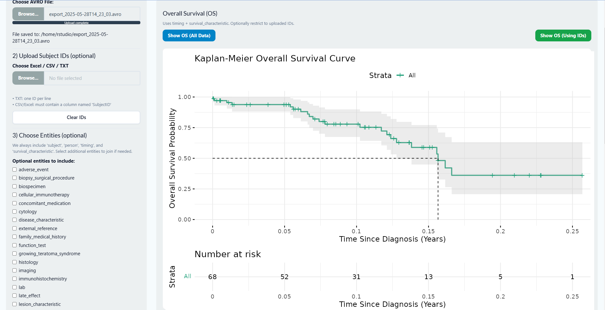

Project Information
Overview
Dockerized R/Shiny Application for PFB AVRO Biomedical Data Analysis
This project provides a Dockerized RStudio-based Shiny application for analyzing biomedical datasets stored in
AVRO files using the Portable Format for Biomedical (PFB) standard. The system leverages Apache Spark (via
sparklyr) to read and process large AVRO inputs and flattens complex hierarchical structures into tidy
tabular formats for downstream analysis.
Users can explore entities and observation nodes, generate percentage distributions, and perform survival
analyses (Kaplan–Meier). A configurable Table-1 feature allows selection of covariates and statistical
comparisons when grouping is applied. Outputs (Excel, PNG) are download-ready for reporting.
Example: nested AVRO structure before flattening.
Workflow
Users upload a PFB AVRO file. Valid files expose available entities. Core entities such as
person, subject, timing, and
survival_characteristics are included by default for survival analyses. Additional
entities may be selected by the user.
The application flattens nested records into a tidy table, preserves relationships, and merges entity-level
information for analyses like distribution counts and survival curves.

After flattening, AVRO data is converted to a tabular form suitable for analysis.
Percentage Distribution
Select categorical variables to compute percentage distributions and download results as Excel or PNG.

Distribution visualization (exportable).
Survival Curves
Overall Survival
Overall survival uses diagnosis and last-known outcome from survival_characteristics.
Kaplan–Meier estimators are used to generate survival plots and downloadable PNGs with risk tables.

Event-Free Survival
Event-free survival uses censoring and event timing information (from subject and
timing) to compute curves.

Table-1 Analysis
Select covariates and variable types to create summary tables. Numeric variables show mean/median/missing %;
categorical variables show counts and percentages. When a subject ID grouping file is uploaded, two groups are
produced (IDs in file vs remaining subjects) and p-values are computed where appropriate.

Interactive Table-1 output (example).

Interactive Table-1 output (singe grouping).

Interactive Table-1 output (grouping + P value).